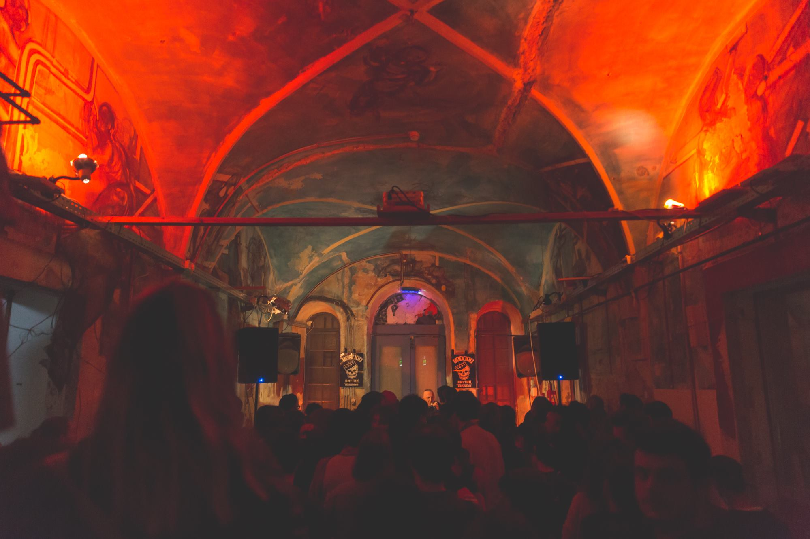
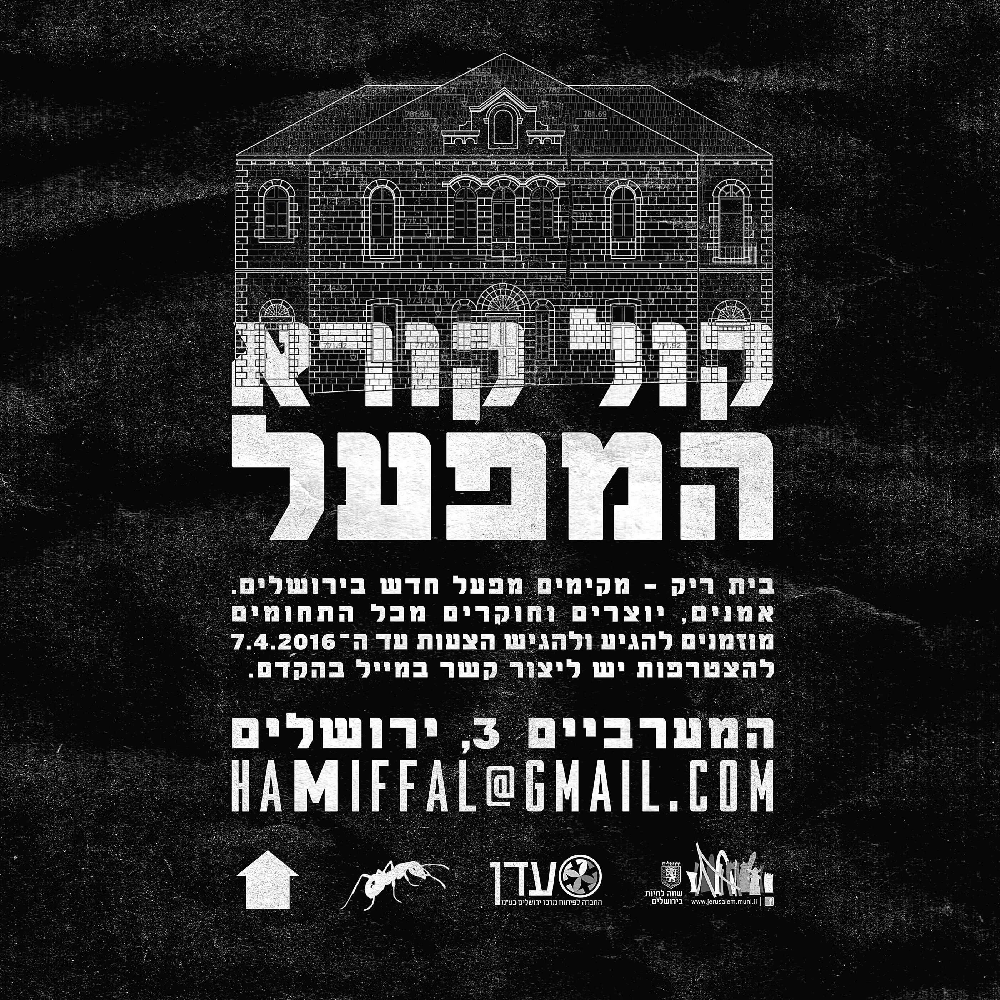
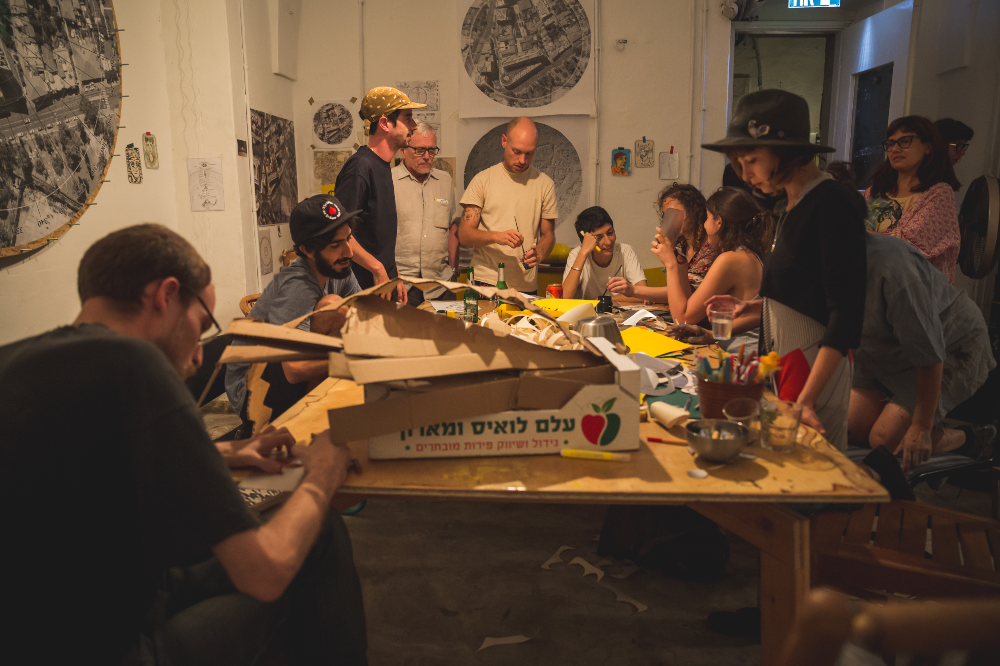
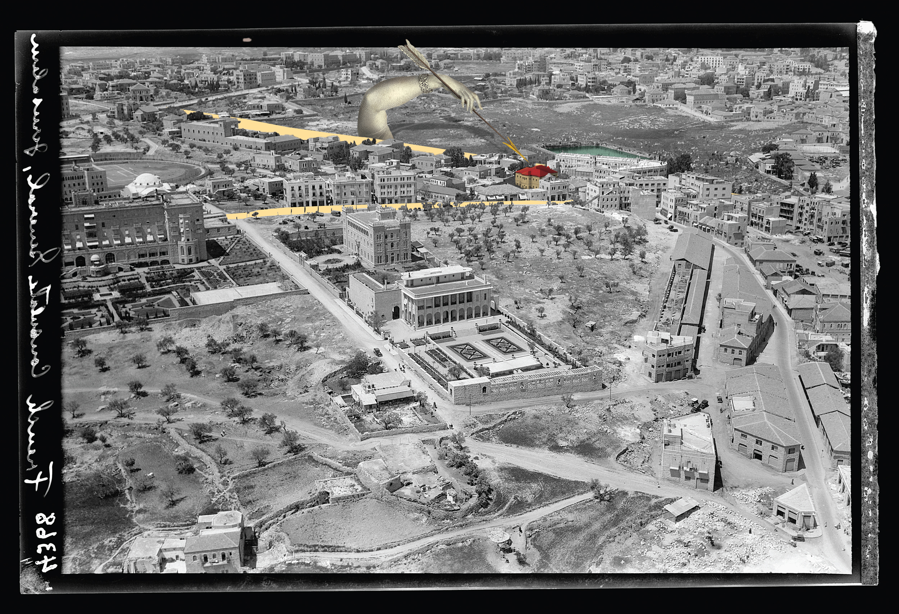

המפעל
מקום

החלל המרכזי של המפעל
המפעל הוא מרכז תרבות רב־תחומי ששוכן בבנין מהמאה ה־19 בשכונת מחנה ישראל. הוא נולד מפעילותה של קבוצת בית ריק שנוצרה בסביבות 2011, סביב המחאה החברתית. חברי הקבוצה היו חברים, חלקם בוגרי בצלאל, שחיפשו פלטפורמה לעבוד בה, ומצאו חללים ריקים ונטושים כמקומות אפשריים לכך. הם יזמו מספר פרוייקטים של השתלטות על מבנים אלה שבהדרגה גדלו בהיקף ובזמן. ב־2016 מצאו את המבנה של המפעל וחלק מהקבוצה נכנס לשיחה מול חברת עדן על שימוש זמני בבניין. לאחר מכן הוחלט שיהפוך לפרוייקט של בית ריק בעל מרכיבים עקרוניים של קול קורא פתוח, אופקיות – אין ניהול מרכזי וכולם מקבלים את אותו השכר. אחרי חודשיים של פעילות הפרוייקט היה אמור להיסגר, כמו כל שאר הפעולות של בית ריק שהיו ארעיות, אך התעורר דיון אולי יש טעם בלהישאר ולהמשיך – אולי לא נאמר ונעשה עדיין כל מה שאפשרי במקום הזה.
אחרי דיון ארוך עם הקבוצה חלק מהקבוצה עזב את הפרוייקט שהפסיק להיות חלק מבית ריק. דפוס הפעילות עבר שינוי והמקום התמסד כארגון, קואופרטיב. המעבר התאפיין במספר שינויים, ביניהם מעבר מארעי לטווח ארוך, מקולקטיב מחוץ לממסד לארגון מוכר ועוד, והיה ניסיון ליצור סוג אחר של מרכז תרבות שמתפקד כפלטפורמה רב תחומית.
כיום המפעל מתפקד ומתרחשת בו פעילות ענפה שניתן להבין בדרכים שונות, בהן כמרחב שלישי בעיר – לא בדיוק פרטי ולא בדיוק ציבורי. מרחב שכל אחד יכול להיכנס אליו ולהציע משהו בו ועם זאת יש קהילה שיש לה קשר אחר עם המקום משאר הציבור והיא חלק ספציפי מהפעילות. האיזון בין המקום של הקהילה ושל הציבור השתנה עם השנים, ממשהו מאוד קהילתי בעבר לימינו שבהם המקום יותר בשימוש הציבור. המפעל הוא בית ליצירה וליוצרים ומציע כמעט לכל אדם עם יוזמה תרבותית אפשרות לפעול, כשיש יותר מ־1000 יוצרים בשנה שיוזמים אירועים ותוכניות – ממפגשי חילופי שפה ערבית-עברית, למסיבות (ההיפנוטיק דיסקוטק קיים את מסיבת האפטר פורים המסורתית במפעל בשנים האחרונות), לסדרות הקרנת סרטים, הופעות, תערוכות ועוד. אמנים רבים עברו במפעל כתחנה בפעילותם, ביניהם קובי ווגמן ואחרים; ובנוסף אנשים מעולמות שונים כמו עמית סטארק מההיפנוטיק, אן דייץ' ורבים אחרים. כמו כן קיים עדיין קשר למעגל של אנשי בית ריק כשחלקם עדיין עושים דברים שקשורים למפעל ועובדים בו.

הקול הקורא להקמת המפעל, 2016. עיצוב: טל הרדה

צילום: ילנה קווטני

עיצוב: טל הרדה
הסיפור של בית ריק והמפעל מאפיין תהליך שקרה בעיר בהקשר של תרבות אלטרנטיבית, מפעילות מתחת לרדאר, ללא שיתוף פעולה עם הממסד ליצירה של פלטפורמות תרבות ועשייה. בעשור האחרון הוקמו יותר מ־15 מרכזי פעילות יצירתיים בעיר. הסצנה הירושלמית עברה שינוי גדול מאוד באופייה, מצד אחד קיימות יותר אפשרויות לפעילות ומצד שני ברור שברגע שיש פניה לציבור רחב יותר והתמסדות יש אלמנטים של איבוד עוקץ מסוים. עם זאת היו ועדיין ישנם קולקטיבים ומקומות עצמאיים לחלוטין שאינם משתפים פעולה עם הממסד, כמו שטראוס ורעש רקורדס. המפעל הוא דוגמה לסיפור של קולקטיב שצומח מסביבה אנטי ממסדית שבה שיתוף פעולה עם המוסדות נחשב בגידה בערכים ואפילו אין לו חשבון בנק, ומגיע להבנה שהחדשנות בפעילות שלו היא חסם לתמיכה והכרה מדינית. התמיכה במוסדות היא אנכרוניסטית ואין בה קטגוריה למקום שמערב שימושים ושהוא פתוח ליוזמות מסוגים שונים כמו המפעל. דבר זה אף הביא לפעילות פוליטית וניסיון להשפיע על מדיניות ברמה הלאומית, של יצירת תמיכה והכרה בסוג המוסדות שלא מתאימים את עצמם לדפוסי הפעילות המסורתיים. זהו חלק מתמונה ארצית של קהילות ומרחבי פעולה רב תחומיים שלא מקבלים תמיכה על אף משמעות עצומה בשטח וביצירה המקומית. ביצירה בירושלים בפרט יש חדשנות רבה, והיא עומדת בחזית העשייה התרבותית בתחומים שונים ורבים. קיימת קהילה חזקה ופעילה, שפועלת נגד הסיכויים: לרוב אף פעם אין מספיק מימון ואין הזדמנויות כלכליות, אחוז גבוה מהקהילה הזאת, כמו שדה האמנות כולו, מזוהה פוליטית וחברתית עם מעגלים מסוימים שלא מאפיינים את ירושלים. עד לפני כמה שנים הייתה הסצנה מסוגרת בתוך עצמה, משום שאין כמעט קהל בעיר (היא תמיד התאפיינה באמנים שיוצרים לאמנים אחרים, ועם זאת הקהל גדל והתרחב עם גדילת הקהילה). בימינו עם הניסיון של מקומות כמו המפעל והמזקקה ליצור הזדמנויות להתקיימות ושרידות כלכלית כמובן שיהיו תהליכים של פנייה לקהל רחב יותר והתמסדות ויש לכך מחיר.